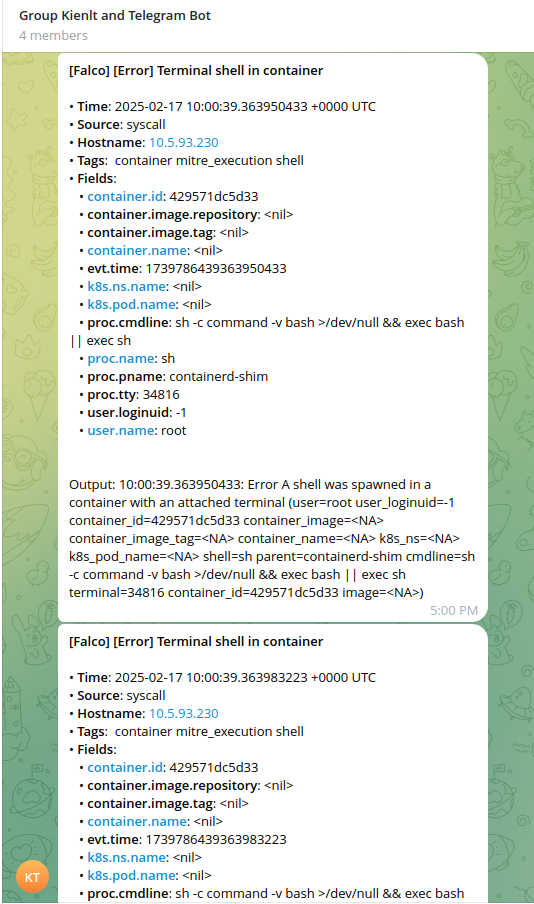
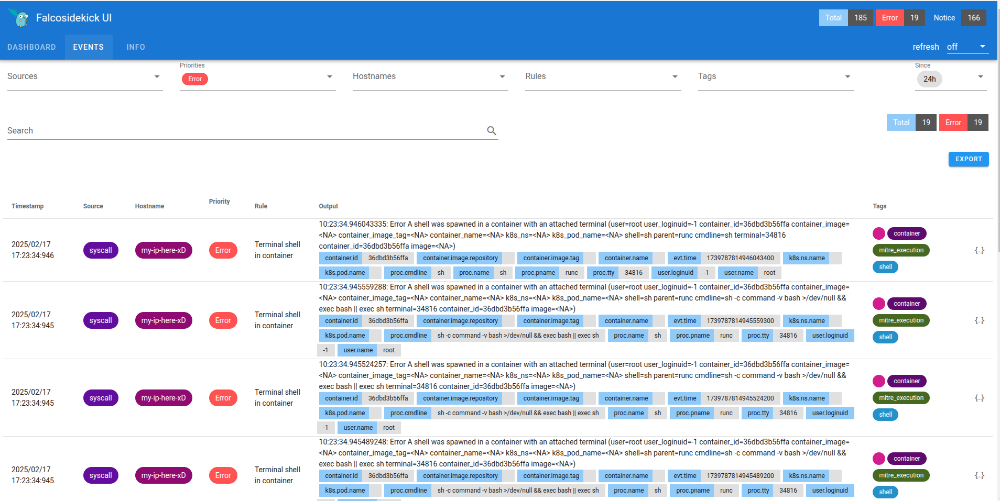

This series will contain 3 parts:
- Part 1. Secure Coding Practices: Tools and Techniques for DevSecOps.
- Part 2. Hardening and Monitoring: Benchmarking and Runtime Security in DevSecOps. (We are here!)
- Part 3. Automating Security: Integrating DevSecOps into CI/CD with Jenkins.
Component in this part
- Open Policy Agent (OPA)
- Cis Benchmarking and Kube-bench
- Falco
- KubeSec/Kube-scan
- Istio & mTLS
1.Open Policy Agent
Open Policy Agent (OPA) is an open-source, general-purpose policy engine that allows you to enforce policies across a wide range of systems and services. Here are the key points about OPA:
What is OPA?
- Purpose: OPA is designed to decouple policy decision-making from the application logic, providing a unified way to enforce policies across your stack.
- Language: OPA uses a high-level declarative language called Rego to write policies.
- Flexibility: It can be integrated with various systems such as Kubernetes, CI/CD pipelines, API gateways, microservices, and more.
It looks like things are complicated, right? Don't worry, i will provide simple examples
Challenges:
- I don't allow image tags to be
latestwhich can be security considering. -
I don't allow images to run as a
rootuser. So how can I prevent them when building images? -
I will use
openpolicyagent/conftestto test it. - I built an image with the policy defined here: https://github.com/BlackMetalz/opa-custom
- Usage:
docker run --rm -v $(pwd):/project kienlt992/opa-custom:v0.56.0 test Dockerfile. Output example:
5 tests, 5 passed, 0 warnings, 0 failures, 0 exceptions
- Let's try with the image to have root user and the latest tag
# Build stage
# 3.10-alpine3.19
# FROM python:3.10-alpine3.19
FROM python:latest
# Switch to root user to install dependencies
USER root
Output example:
docker run - rm -v $(pwd):/project kienlt992/opa-custom:latest test test_Dockerfile/Dockerfile
FAIL - test_Dockerfile/Dockerfile - main - Line 3: do not use 'latest' tag for base images
FAIL - test_Dockerfile/Dockerfile - main - Line 5: Running as root user is forbidden
5 tests, 3 passed, 0 warnings, 2 failures, 0 exceptions
So when we integrate this into the CICD Pipeline, it will break the build if checks are not passed! You can add more custom rules with your policy.
2. Kube-bench
Kube-bench is a tool that Checks Kubernetes Security Configuration:
- Runs automated tests against your Kubernetes clusters.
- Verifies compliance with the CIS benchmark of K8S (a set of globally recognized best practices for securely configuring IT systems).
- Tests both control plane and worker nodes.
Installation:
wget "https://github.com/aquasecurity/kube-bench/releases/download/v0.10.2/kube-bench_0.10.2_linux_amd64.deb"
sudo apt install -f ./kube-bench_0.10.2_linux_amd64.deb
Usage:
- You need to install it to every node, yes holy shiet indeed if you want to use kube-bench cli.
- Run with example output in a worker node using a version of rke1:
v1.28.9so i would like to use profilerke-cis-1.24to benchmark
# kube-bench - benchmark rke-cis-1.24
[INFO] 4 Worker Node Security Configuration
[INFO] 4.1 Worker Node Configuration Files
[FAIL] 4.1.1 Ensure that the kubelet service file permissions are set to 644 or more restrictive (Automated)
[PASS] 4.1.2 Ensure that the kubelet service file ownership is set to root:root (Automated)
[PASS] 4.1.3 If proxy kubeconfig file exists ensure permissions are set to 644 or more restrictive (Manual)
[PASS] 4.1.4 Ensure that the proxy kubeconfig file ownership is set to root:root (Manual)
[PASS] 4.1.5 Ensure that the - kubeconfig kubelet.conf file permissions are set to 644 or more restrictive (Automated)
[PASS] 4.1.6 Ensure that the - kubeconfig kubelet.conf file ownership is set to root:root (Manual)
[PASS] 4.1.7 Ensure that the certificate authorities file permissions are set to 644 or more restrictive (Manual)
[PASS] 4.1.8 Ensure that the client certificate authorities file ownership is set to root:root (Manual)
[FAIL] 4.1.9 Ensure that the kubelet - config configuration file has permissions set to 644 or more restrictive (Automated)
[FAIL] 4.1.10 Ensure that the kubelet - config configuration file ownership is set to root:root (Automated)
….
== Summary total ==
3 checks PASS
9 checks FAIL
35 checks WARN
0 checks INFO
-
Why does the check show fail? Because it is not set correct variable for kubelet service file permission in rke1: https://github.com/aquasecurity/kube-bench/blob/main/cfg/rke-cis-1.24/node.yaml#L1C1-L23C21
-
I have debug logs here:
I0215 11:42:25.892084 1020849 check.go:309] Command: "/bin/sh -c 'if test -e /etc/systemd/system/kubelet.service.d/10-kubeadm.conf; then stat -c permissions=%a /etc/systemd/system/kubelet.service.d/10-kubeadm.conf; fi'"
I0215 11:42:25.892231 1020849 check.go:310] Output:
""
I0215 11:42:25.892323 1020849 check.go:231] Running 1 test_items
I0215 11:42:25.892382 1020849 test.go:247] Flag 'permissions' does not exist
I0215 11:42:25.892445 1020849 check.go:255] Used auditCommand
I0215 11:42:25.892520 1020849 check.go:287] Returning from execute on tests: finalOutput &check.testOutput{testResult:false, flagFound:false, actualResult:"", ExpectedResult:"'permissions' is present"}
I0215 11:42:25.892581 1020849 check.go:184] Command: "" TestResult: false State: "FAIL"
I0215 11:42:25.892640 1020849 check.go:110] - - - Running check 4.1.2 - - -
I0215 11:42:25.892686 1020849 check.go:125] Test marked as skip
I0215 11:42:25.892732 1020849 check.go:110] - - - Running check 4.1.3 - - -
I0215 11:42:25.895644 1020849 check.go:309] Command: "/bin/sh -c 'if test -e /etc/kubernetes/ssl/kubecfg-kube-proxy.yaml; then stat -c permissions=%a /etc/kubernetes/ssl/kubecfg-kube-proxy.yaml; fi'"
I0215 11:42:25.895790 1020849 check.go:310] Output:
"permissions=600\n"
- It's time to fix the wrong check? xD. Yes, definitely.
- Show the debug output
kube-bench - benchmark rke-cis-1.24 - logtostderr - v=3. - My commit for fixes: kube-bench commit
- Not really called fix because i just make them don't score and correct path for required file and little updates. Output after re-run again xD:
== Summary total ==
20 checks PASS
0 checks FAIL
28 checks WARN
5 checks INFO
3. Kubesec
Kubesec is a Security risk analysis for Kubernetes resources. It provides detailed insights and recommendations on how to improve the security posture of your Kubernetes manifests.
Installation && Usage:
This can be used without installation by sending your deployment manifest to the Kubesec server.
Example: I include timeout to prevent stuck in the pipeline. And manifest passed-deployment.yaml
curl - max-time 30 -sSX POST - data-binary @passed-deployment.yaml https://v2.kubesec.io/scan
Output example with Passed: We can see message contains Passed word so we can assume it is passed.
[
{
"object": "Deployment/release-name-golang-webapp-testing.default",
"valid": true,
"fileName": "passed-deployment.yaml",
"message": "Passed with a score of 3 points",
"score": 3,
"scoring": {
"passed": [
{
"id": "ServiceAccountName",
"selector": ".spec .serviceAccountName",
"reason": "Service accounts restrict Kubernetes API access and should be configured with least privilege",
"points": 3
}
],
"advise": [
{
"id": "ApparmorAny",
"selector": ".metadata .annotations .\"container.apparmor.security.beta.kubernetes.io/nginx\"",
"reason": "Well defined AppArmor policies may provide greater protection from unknown threats. WARNING: NOT PRODUCTION READY",
"points": 3
},
.......
Output example with Failed with manifest failed-deployment.yaml: In message field we can see it contains Failed word!
[
{
"object": "Deployment/insecure-app.default",
"valid": true,
"fileName": "failed-deployment.yaml",
"message": "Failed with a score of -67 points",
"score": -67,
"scoring": {
"critical": [
{
"id": "CapSysAdmin",
"selector": "containers[] .securityContext .capabilities .add == SYS_ADMIN",
"reason": "CAP_SYS_ADMIN is the most privileged capability and should always be avoided",
"points": -30
},
{
"id": "Privileged",
"selector": "containers[] .securityContext .privileged == true",
"reason": "Privileged containers can allow almost completely unrestricted host access",
"points": -30
},
{
"id": "AllowPrivilegeEscalation",
"selector": "containers[] .securityContext .allowPrivilegeEscalation == true",
"reason": "Ensure a non-root process can not gain more privileges",
"points": -7
}
....
4. Istio and mTLS (Mutual Transport Layer Security)
I think it will be overwhelming for me if i include it in this post. I will write separately for Istio, Service Mesh, and mTLS… in another article.
5. Falco
Falco is an open-source runtime security tool originally developed by Sysdig. It is designed to monitor and detect unexpected behavior in your Kubernetes (k8s) clusters. Falco focuses on providing real-time security monitoring by analyzing the behavior of applications, containers, hosts, and network activity.
Example Use Cases:
-
Detecting Container Breakouts: Falco can alert if a container tries to access the host filesystem in an unexpected way, indicating a potential container breakout attempt.
-
Monitoring Privileged Escalation: Falco can detect if an application or container attempts to run with elevated privileges, which might indicate a privilege escalation attack.
-
Detecting Suspicious Network Activity: Falco can monitor network connections and alert on unusual patterns, such as unexpected outbound connections from a container.
Deployment in Kubernetes:
To deploy Falco in a Kubernetes cluster, you can use the Helm chart provided by the Falco community. Below are the basic steps to get started:
- Add the Falco Helm Repository:
helm repo add falcosecurity https://falcosecurity.github.io/charts
helm repo update
- Install Falco to namespace Falco with limited resources:
helm install falco falcosecurity/falco \
- set resources.requests.cpu=200m \
- set resources.requests.memory=256Mi \
- set resources.limits.cpu=500m \
- set resources.limits.memory=512Mi \
-n falco - create-namespace
This will deploy Falco as a DaemonSet, ensuring it runs on all nodes in your cluster and starts monitoring system calls and other activities.
Demo:
I create separate repo with some examples for Falco: https://github.com/BlackMetalz/falco
Forward message to telegram when event with priority ERROR happened and rule Terminal shell in container ( I was overrided default rule with priority from Notice to Error for demo!)

Show it in UI:

Ref:
- https://github.com/gbrindisi/dockerfile-security (outdated)
- https://github.com/controlplaneio/kubesec
- https://github.com/aquasecurity/kube-bench
- https://www.aquasec.com/blog/dns-spoofing-kubernetes-clusters/
- https://falco.org/
- https://github.com/falcosecurity/falco
- https://chatgpt.com/ xD
- https://claude.ai/ xD